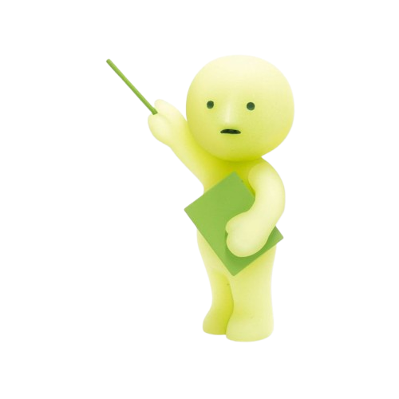
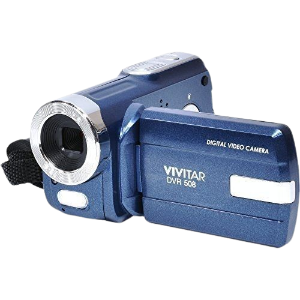
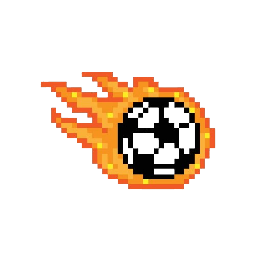
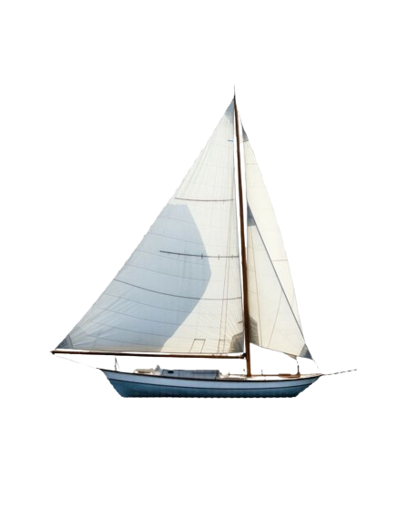
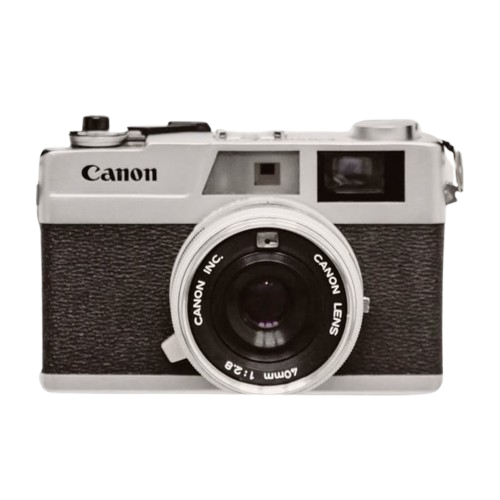
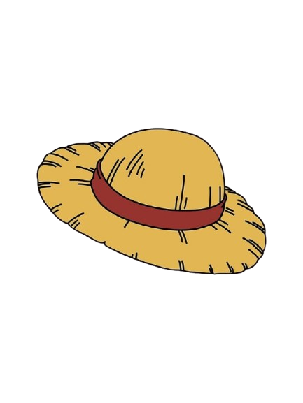
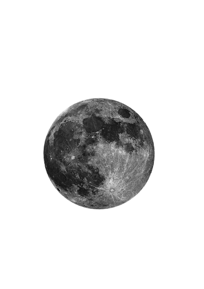
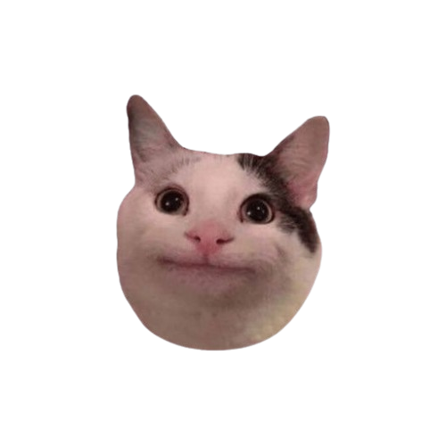

✦ ABOUT THIS LITTLE PLACE ✦
Hello, stranger :)
When I started this assignment, I was supposed to choose one thing that I love. The problem was... I couldn't think things, so instead of choosing one, I decided to put a little bit of everything here.

✦ Art & Design ✦
I've always liked making things look a certain way, even when I don't really know how to explain what that "certain way" is. I enjoy experimenting with art, design, layouts, colours, and little visual ideas just to see what happens.

✦ Cameras & Little ✦
Time Machines
I have a weird little attachment to old things, especially old cameras and archives. I love vintage cameras, old digital cameras, and especially those little Cyber-shot cameras.
There is something about old technology and old photographs that feels nostalgic to me. Maybe it's the imperfections, the colours, or just the feeling that the object has already lived through another little piece of someone's life.
✦ Stories & Worlds ✦
I really like stories that can create a certain feeling — especially ones that feel warm, comforting, poetic, nostalgic, or just a little different.
I like films that make ordinary moments feel special, but I can also happily watch something completely different when the mood strikes.
I also really enjoy books, manga, and anime. Sometimes it's the characters, sometimes the world, sometimes the atmosphere, and sometimes I don't even know exactly why I got attached to a story. I just did. :)
There are way too many stories I've loved to put them all here, so the actual collection can live in the Gallery.
✦ Curiosity & Random Rabbit ✦ Holes
I really like learning random things, especially things I probably didn't need to know in the first place. Sometimes I'll come across something strange or unusual and suddenly find myself searching about it for hours.
One random question can somehow turn into an entire night of reading, watching videos, and falling down completely unrelated rabbit holes. ><
✦ Little Things ✦
A few other things that somehow found their way into my list of things I like:



.png)



✦ Someday I'd Like To... ✦
There are also a lot of things I've never tried but would love to experience someday.
- Travel somewhere new
- Try skiing
- Try sky Diving
- Try surfing
- Visit interesting architecture
- Learn something completely new
✦ Things I'm Learning ✦
| Thing | Progress |
|---|---|
| HTML | Practicing |
| CSS | Practicing |
| JavaScript | Started |
| Graphic Design | Practicing |
| ... | ... |